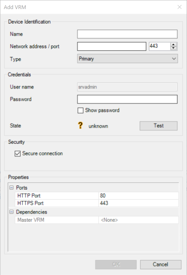
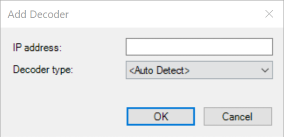
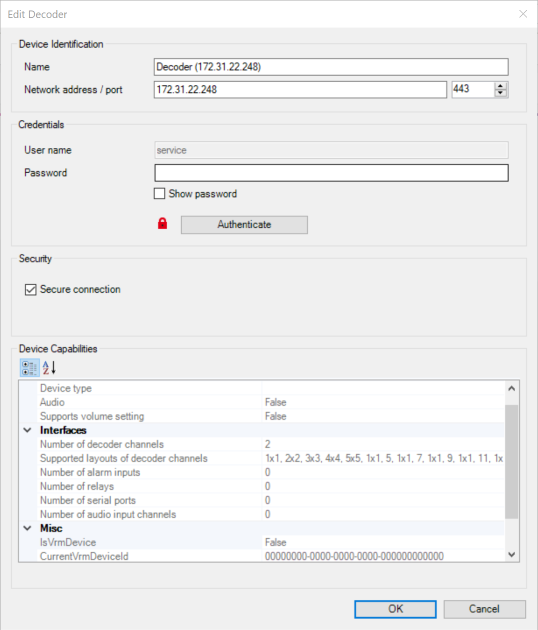

Noticeable Problems
[[TOC]]
Misleading naming
- the name of the UI elements doesn't fit to the usage
- hard to navigate through list of UI elements
Sample: dialog "Add iSCSI Device" under pool

| Element Name | Automation-ID | Usage |
|---|---|---|
Network address |
tbUserName |
textbox for the user name |
iSCSI device type |
passord |
textbox for the password |
Name |
networkAdress |
textbox for the network address |
| `` | name |
textbox for the device name |
Sample: Configuration Pane for a Pool

| Element Name | Automation-ID | Usage |
|---|---|---|
Block reservation for downtime (days) |
cbLoadbalancingMode |
combobox for the recording preference |
NumericUpDown |
nuDistributionDuration |
reservation time for blocks |
Modal Window from Modal Window
- scanning for encoders starts a window with a progress bar
- the scanning stops by around 75% and a new modal dialog with scan-status appears
- this dialog has the progress window as the parent
- tried to get array of modal window from main window, but the new dialog is not listed inside
- instead it appears inside the array of modal windows from the scan window
Missing consistency during device adding
- adding a VRM or VSG opens during adding such a dialog
 - adding a Decoder needs these two dialogs


This destroyed the smart initial approach to use the template method pattern to add monitor-like devices.